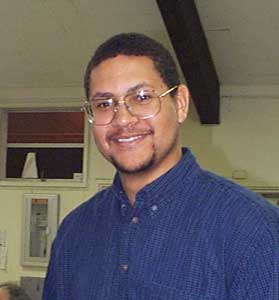
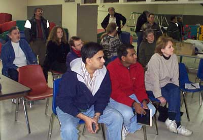

|  |
Once again, SJAA member Doug Davis is offering his series of observational astronomy classes at Houge Park. This series of classes, which are open to the public, are provided at no charge. Doug mixes great slides he's prepared with great personal knowledge and understanding of the subject matter. Then there are club members and friends in the audience who augment the discussion with their own experience, observations and knowledge. It's a great interaction for all!
The second in the series was held on February 12, and I attended the class for the first time. I'm glad I did! The 30 participants were a great mix of new members, from astronomical novices to seasoned veterans of the star wars out there. Some members picked up their SJAA loaner scopes after a lesson or two from Loaner Scope program coordinator Mike Koop. Others returned scopes they have borrowed. It was a great night for astronomy, in spite of the rain and cloudy skies.
Each class stands alone, but the sum of all of them will give the novice a great understanding of the most important and basic facts about observational astronomy. For example, in the first class, Doug offers up the sky. Literally!
The first class: "Introduction to the Sky" provides a general overview of amateur astronomy, understanding the celestial sphere and coordinate systems, basic understanding of constellations, star-hopping and finding one's way around the sky, and naked eye sky phenomena. Now that's a great beginning for the novice, and a wonderful refresher for the beginning or intermediate amateur.
The second class: "Telescopes", explains how telescopes work, the evolution of the basic types and commercial brands, exploring what is on the market today. A little bit on how to determine which scope is right for you, and examination of some of the features and misconceptions. Doug also covers scopes to avoid!
Armed with the knowledge gleaned from just these first two classes, most attendees would agree with me that they have what it takes to really get started in astronomy! I'll bet these star savvy students are beginning with a more solid fundamental knowledge than most amateur astronomers out there. We have Doug to thank! I learned a thing or two myself.
Over the next few months, these great topics will be covered in Doug's class:
There may be some more topics covered after these first six classes, so be sure to check the SJAA activity calendar, or the hotline for details.
|  |